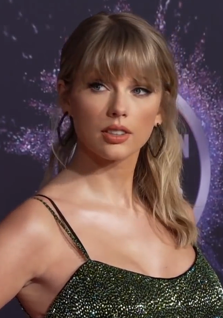

Taylor Swift
Taylor Alison Swift (born December 13, 1989) is an American singer-songwriter. Her discography straddles genres, and her narrative songwriting—often inspired by her personal life—has received critical praise and widespread media coverage.
Swift explored country pop on the albums Fearless (2008) and Speak Now (2010); the success of singles "Love Story", "You Belong with Me" and "Back to December" on both country and pop radio established her as a leading crossover artist. She experimented with rock and electronic genres on her fourth studio album, Red (2012), supported by the singles "We Are Never Ever Getting Back Together" and "I Knew You Were Trouble". Swift eschewed country on her synth-pop album 1989 (2014) and its chart-topping tracks "Shake It Off", "Blank Space", and "Bad Blood". Media scrutiny on her private life inspired Reputation (2017), which drew from urban sounds. Led by "Look What You Made Me Do", the album made Swift the only act in MRC Data history to have four albums each sell over a million copies in a week.
Parting ways with Big Machine, Swift signed with Republic Records in 2018 and released her seventh studio album, Lover (2019). Veered by the COVID-19 pandemic, she ventured into indie folk and alternative rock styles on her 2020 albums, Folklore and Evermore, receiving plaudits for their nuanced storytelling. Following a dispute over the masters of her back catalog, Swift released the re-recordings Fearless (Taylor's Version) and Red (Taylor's Version) to universal acclaim in 2021. Number-one songs "Cardigan", "Willow" and "All Too Well (10 Minute Version)" made Swift the only act to simultaneously debut atop the US Billboard Hot 100 and Billboard 200 charts three times.